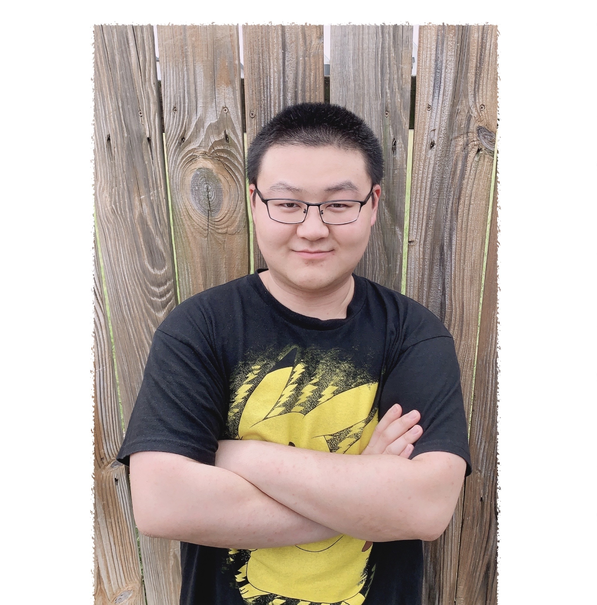 I am currently a fourth-year Ph.D. candidate of Electrical and Computer Engineering (DICE) at VITA, The University of Texas at Austin, advised by Dr. Zhangyang (Atlas) Wang. My research interests include Sparse Neural Network & Lottery Ticket Hypothesis, AutoML & Learning to Optimize, Adversarial Robustness, Graph Neural Networks, and Self-Supervision. I am a recipient of 2021 IBM Ph.D. Fellowship, 2021 Graduate Dean’s Prestigious Fellowship, 2022 Adobe Ph.D. Fellowship. [Resume] [Google Scholar] [Publication]
Education
- [Aug. 2020 - Present] Ph.D. candidate in Electrical and Computer Engineering, DICE, The University of Texas at Austin
- [Aug. 2018 - Aug. 2020] Ph.D. student in Computer Science, Texas A&M University
- [Aug. 2013 - Jun. 2017] B.S.c. in Applied Mathematics and B.Eng. (Dual) in Computer Science, School of the Gifted Young, University of Science and Technology of China
Selected Conference Paper
[*equal contribution]
2022
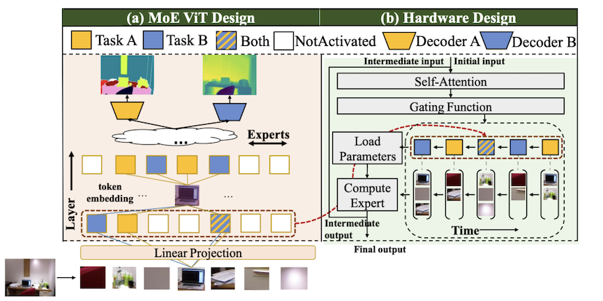[NeurIPS’22] M3ViT: Mixture-of-Experts Vision Transformer for Efficient Multi-task Learning with Model-Accelerator Co-design
H. Liang, Z. Fan, R. Sarkar, Z. Jiang, T. Chen, K. Zou, Y. Cheng, C. Hao, and Z. Wang. [Paper] [Code] [Abstract]
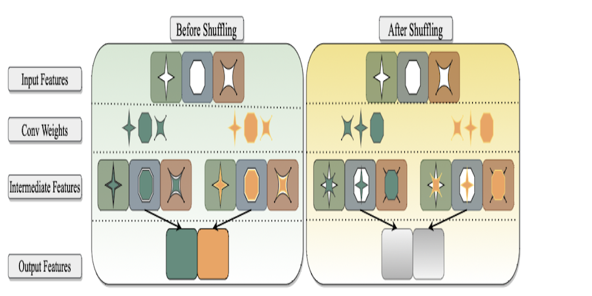[NeurIPS’22] Randomized Channel Shuffling: Minimal-Overhead Backdoor Attack Detection without Clean Datasets
R. Cai, Z. Zhang, T. Chen, X. Chen, and Z. Wang. [Paper] [Code] [Abstract]
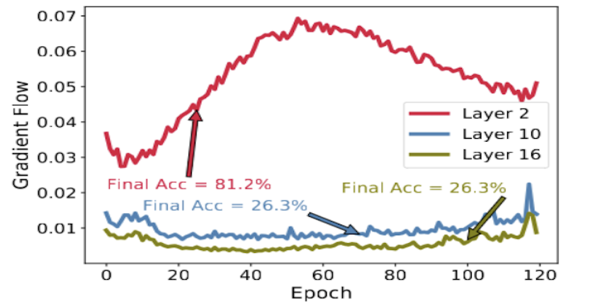[NeurIPS’22] Old can be Gold: Better Gradient Flow can make Vanilla-GCNs Great Again
A. Jaiswal, P. Wang, T. Chen, J. Rousseau, Y. Ding, and Z. Wang. [Paper] [Code] [Abstract]
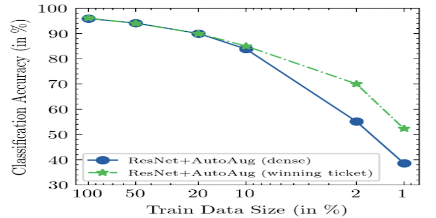[NeurIPS’22] Sparse Winning Tickets are Data-Efficient Image Recognizers
M. Varma, X. Chen, Z. Zhang, T. Chen, S. Venugopalan, and Z. Wang. [Paper] [Code] [Abstract]
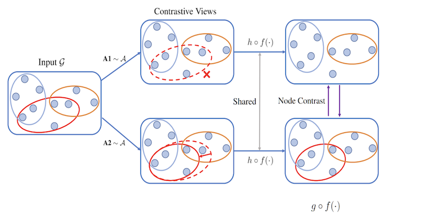[NeurIPS’22] Augmentations in Hypergraph Contrastive Learning: Fabricated and Generative
T. Wei, Y. You, T. Chen, Y. Shen, J. He, and Z. Wang. [Paper] [Code] [Abstract]
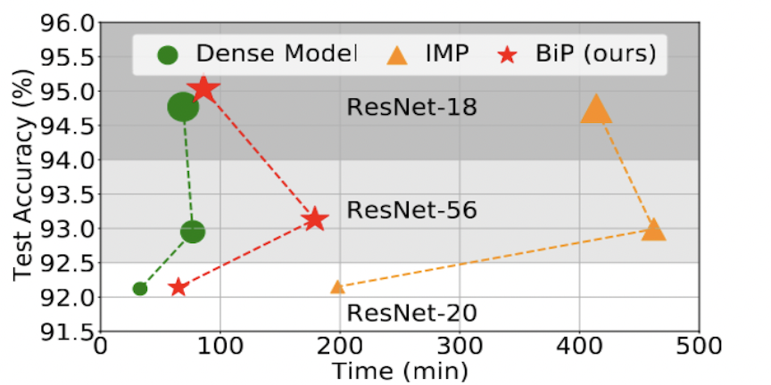[NeurIPS’22] Advancing Model Pruning via Bi-level Optimization
Y. Zhang, Y. Yao, P. Ram, P. Zhao, T. Chen, M. Hong, Y. Wang, S. Liu. [Paper] [Code] [Abstract]
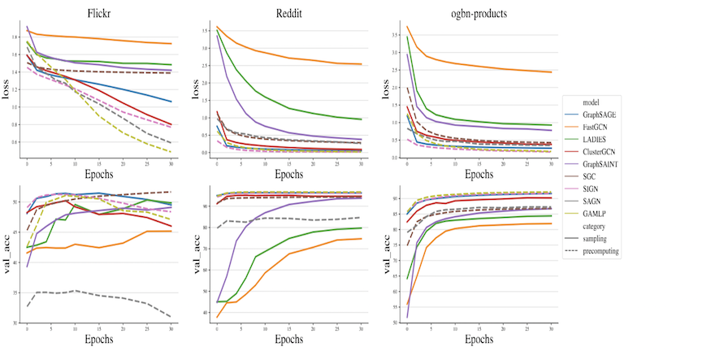[NeurIPS’22 Dataset and Benchmark] A Comprehensive Study on Large-Scale Graph Training: Benchmarking and Rethinking
K. Duan, Z. Liu, P. Wang, W. Zheng, K. Zhou, T. Chen, X. Hu, and Z. Wang. [Paper] [Code] [Abstract]
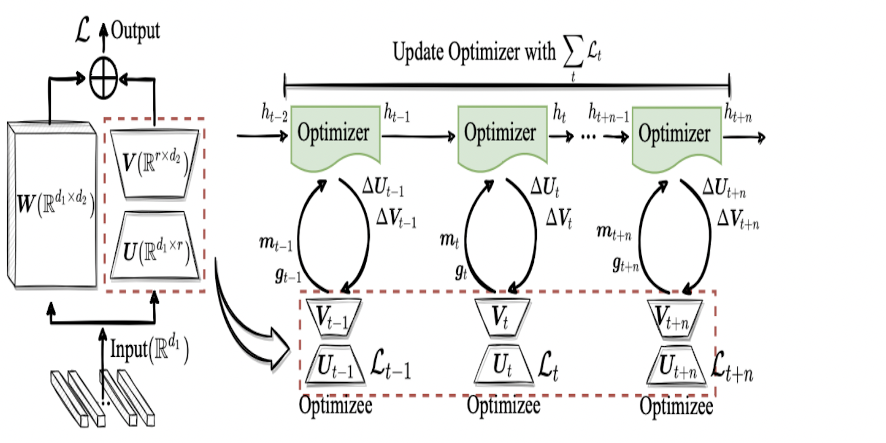[ECCV’22] Scalable Learning to Optimize: A Learned Optimizer Can Train Big Models
X. Chen*, T. Chen*, Y. Cheng, W. Chen, A. Awadallah, and Z. Wang. [Paper] [Code] [Abstract]
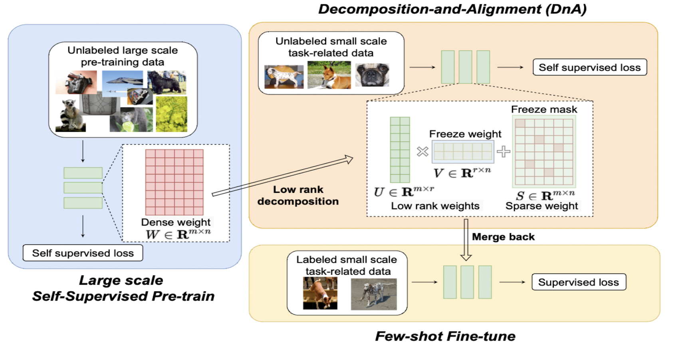[ECCV’22] DnA: Improving Few-shot Transfer Learning with Low-Rank Decomposition and Alignment
Z. Jiang, T. Chen, X. Chen, Y. Cheng, L. Zhou, L. Yuan, A. Awadallah, and Z. Wang. [Paper] [Code] [Abstract]
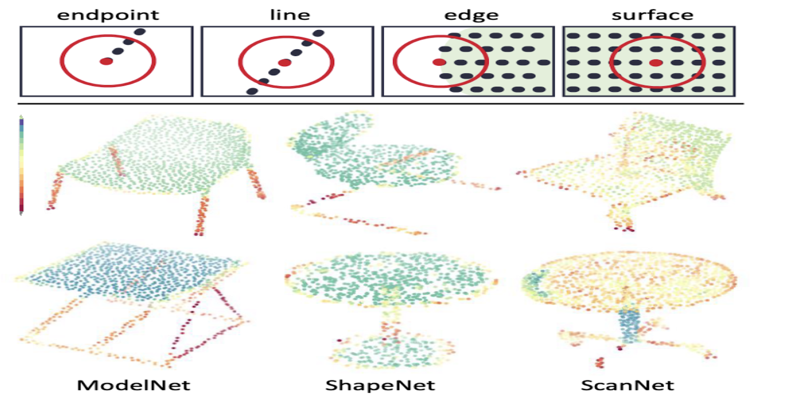[ECCV’22] Point Cloud Domain Adaptation via Masked Local 3D Structure Prediction
H. Liang, H. Fan, Z. Fan, Y. Wang, T. Chen, Y. Cheng, and Z. Wang. [Paper] [Code] [Abstract]
 [ICML’22] Data-Efficient Double-Win Lottery Tickets from Robust Pre-training
[ICML’22] Data-Efficient Double-Win Lottery Tickets from Robust Pre-training
T. Chen, Z. Zhang, S. Liu, Y. Zhang, S. Chang, and Z. Wang. [Paper] [Code] [Abstract]
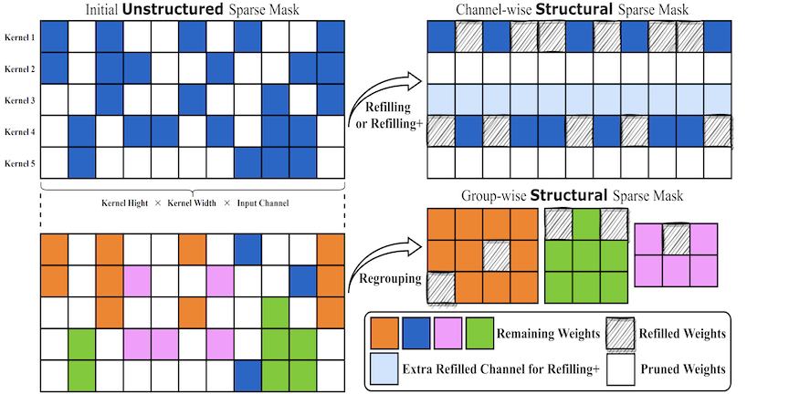 [ICML’22] Coarsening the Granularity: Towards Structurally Sparse Lottery Tickets
T. Chen, X. Chen, X. Ma, Y. Wang, and Z. Wang. [Paper] [Code] [Abstract]
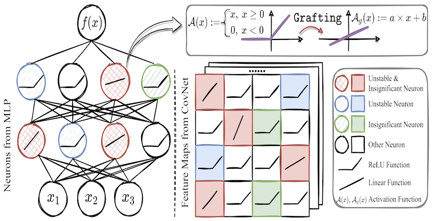 [ICML’22] Linearity Grafting: How Neuron Pruning Helps Certifiable Robustness
T. Chen*, H. Zhang*, Z. Zhang, S. Chang, S. Liu, P. Chen, and Z. Wang. [Paper] [Code] [Abstract]
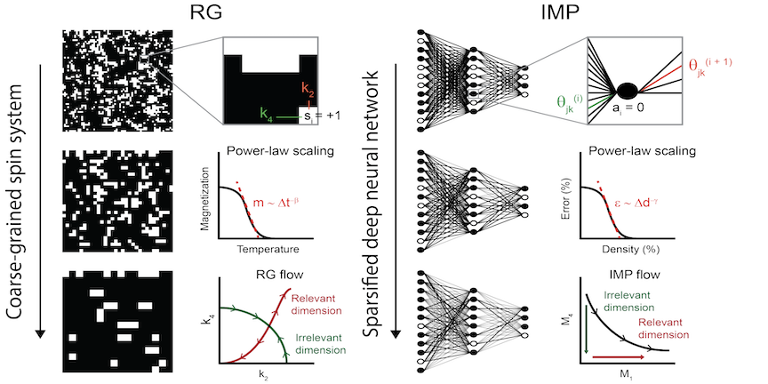 [ICML22] Universality of Winning Tickets: A Renormalization Group Perspective
W. Redman, T. Chen, Z. Wang, and A. Dogra. [Paper] [Code] [Abstract]
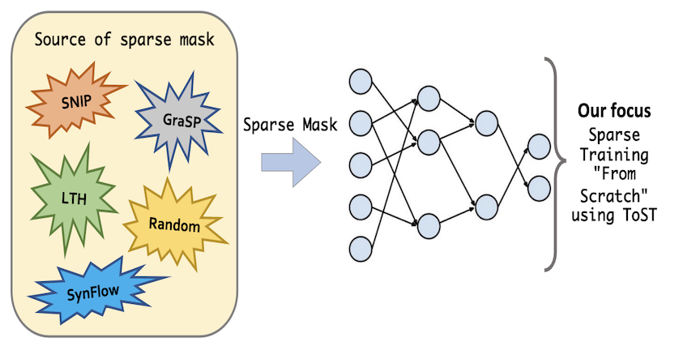 [ICML’22] Training Your Sparse Neural Network Better with Any Mask
A. Jaiswal, H. Ma, T. Chen, Y. Ding, and Z. Wang. [Paper] [Code] [Abstract]
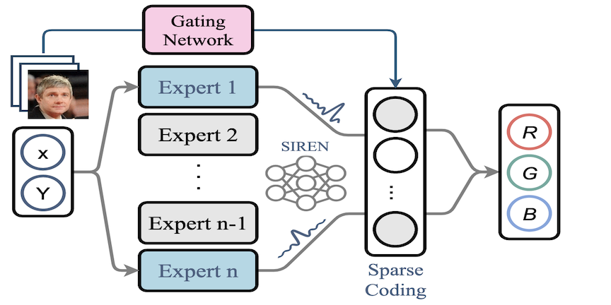 [ICML’22] Neural Implicit Dictionary Learning via Mixture-of-Expert Training
P. Wang, Z. Fan, T. Chen, and Z. Wang. [Paper] [Code] [Abstract]
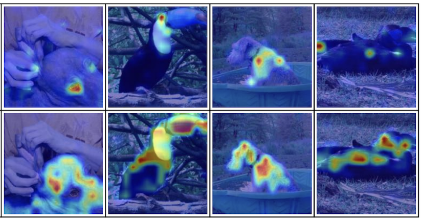 [CVPR22] The Principle of Diversity: Training Stronger Vision Transformers Calls for Reducing All Levels of Redundancy
T. Chen, Z. Zhang, Y. Chang, A. Awadallah, and Z. Wang. [Paper] [Code] [Abstract]
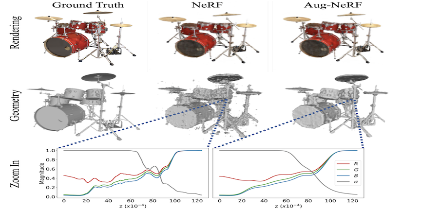 [CVPR’22] Aug-NeRF: Training Stronger Neural Radiance Fields with Triple-Level Augmentations
T. Chen*, P. Wang*, Z. Fan, and Z. Wang. [Paper] [Code] [Abstract]
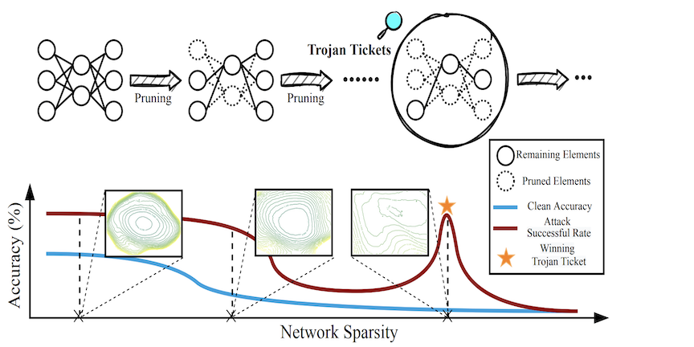 [CVPR’22] Quarantine: Sparsity Can Uncover the Trojan Attack Trigger for Free
T. Chen*, Z. Zhang*, Y. Zhang*, S. Chang, S. Liu, and Z. Wang. [Paper] [Code] [Abstract]
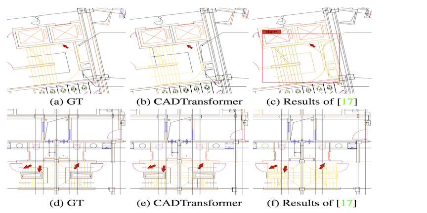 [CVPR’22 Oral] CADTransformer: Panoptic Symbol Spotting Transformer for CAD Drawings
Z. Fan, T. Chen, P. Wang, and Z. Wang. [Paper] [Code] [Abstract]
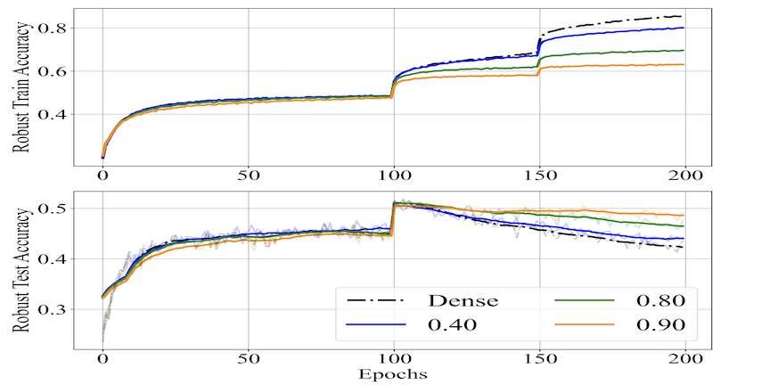 [ICLR‘22] Sparsity Winning Twice: Better Robust Generalization from More Efficient Training
T. Chen*, Z. Zhang*, P. Wang*, S. Balachandra*, H. Ma*, Z. Wang and Z. Wang. [Paper] [Code] [Abstract]
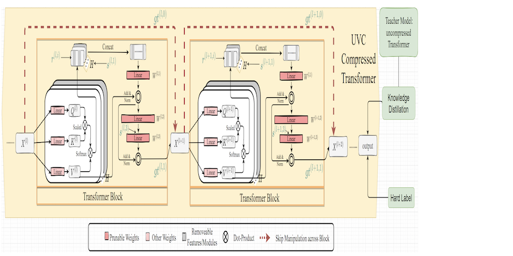 [ICLR’22] Unified Visual Transformer Compression
S. Xing*, T. Chen*, J. Shen, H. Yuan, J. Tan, S. Yang, J. Liu and Z. Wang. [Paper] [Code] [Abstract]
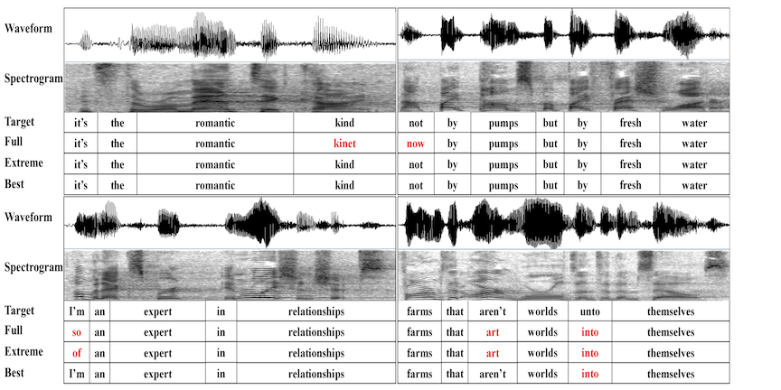 [ICLR’22] Audio Lottery: Speech Recognition Made Ultra-Li- ghtweight, Noise-Robust, and Transferable
S. Ding*, T.Chen* and Z. Wang. [Paper] [Code] [Abstract]
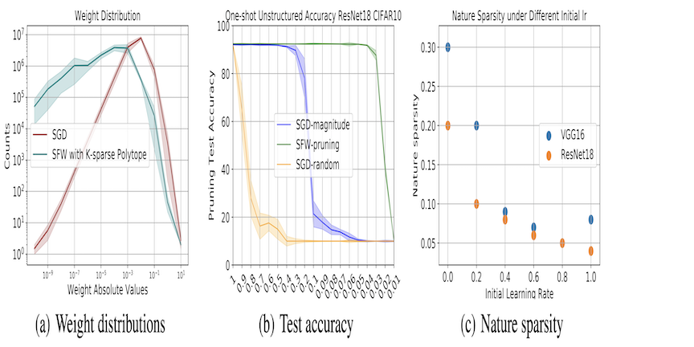 [ICLR’22 Spotlight] Learning Pruning-Friendly Networks via Frank-Wolfe: One-Shot, Any-Sparsity, And No Retraining
L. Miao, X. Luo, T. Chen, W. Chen, D. Liu and Z. Wang. [Paper] [Code] [Abstract]
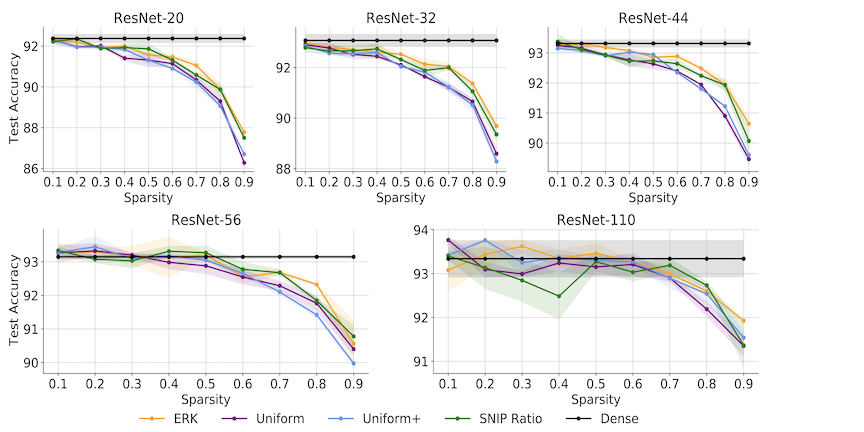 [ICLR’22] The Unreasonable Effectiveness of Random Pruning: Return of the Most Naive Baseline for Sparse Training
S. Liu, T. Chen, X. Chen, L. Shen, D. Mocanu, Z. Wang and M. Pechenizkiy. [Paper] [Code] [Abstract]
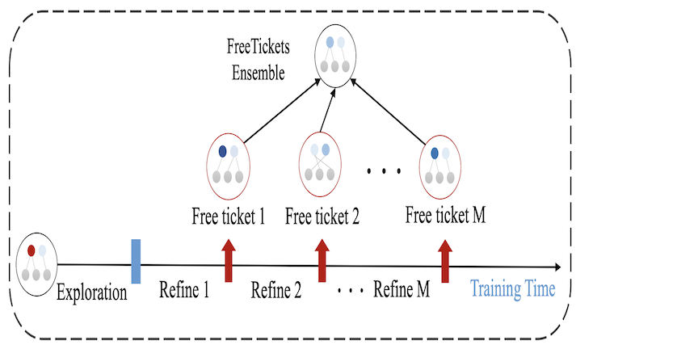 [ICLR’22] Deep Ensembling with No Overhead for either Training or Testing: The All-Round B- lessings of Dynamic Sparsity
S. Liu, T. Chen, Z. Atashgahi, X. Chen, G. Sokar, E. Mocanu, M. Pechenizkiy, Z. Wang and D. Mocanu. [Paper] [Code] [Abstract]
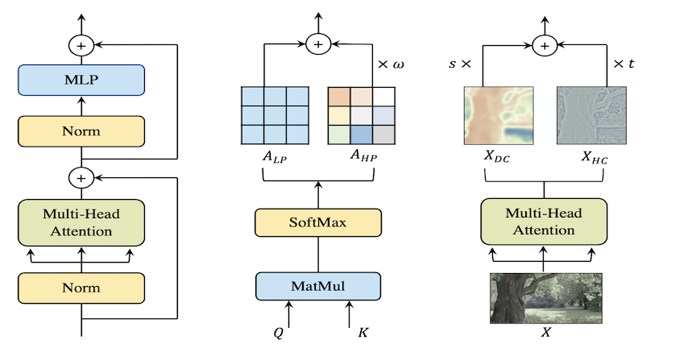 [ICLR’22] Scaling the Depth of Vision Transformers via the Fourier Domain Analysis
P. Wang, W. Zheng, T. Chen and Z. Wang. [Paper] [Code] [Abstract]
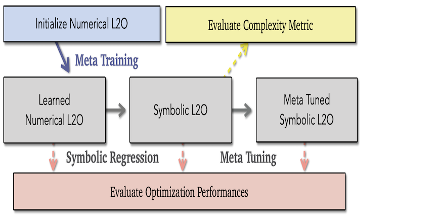 [ICLR’22] Symbolic Learning to Optimize: Towards Interpretability and Scalability
W. Zheng, T. Chen, T. Hu and Z. Wang. [Paper] [Code] [Abstract]
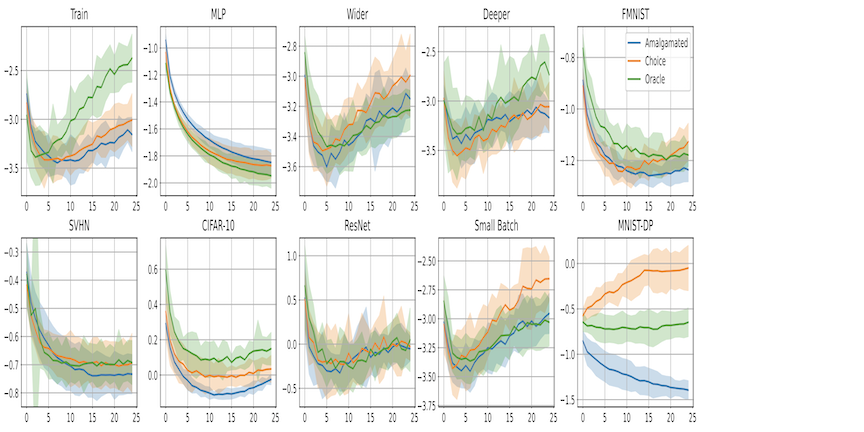 [ICLR’22] Optimizer Amalgamation
T. Huang, T. Chen, S. Liu, S. Chang, L. Amini and Z. Wang. [Paper] [Code] [Abstract]
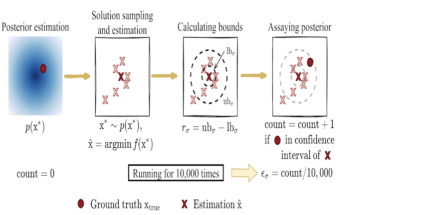 [ICLR’22] Bayesian Modeling and Uncertainty Quantification for Learning to Optimize: What, Why, and How
Y. You, Y. Cao, T. Chen, Z. Wang and Y. Shen. [Paper] [Code] [Abstract]
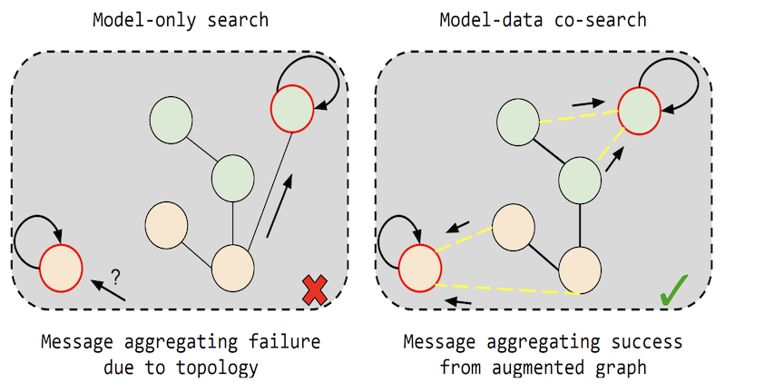 [AutoML’22] AutoCoG: A Unified Data-Model Co-Search Framework for Graph Neural Networks
D. Hoang, K. Zhou, T. Chen, X. Hu, and Z. Wang. [Paper] [Code] [Abstract]
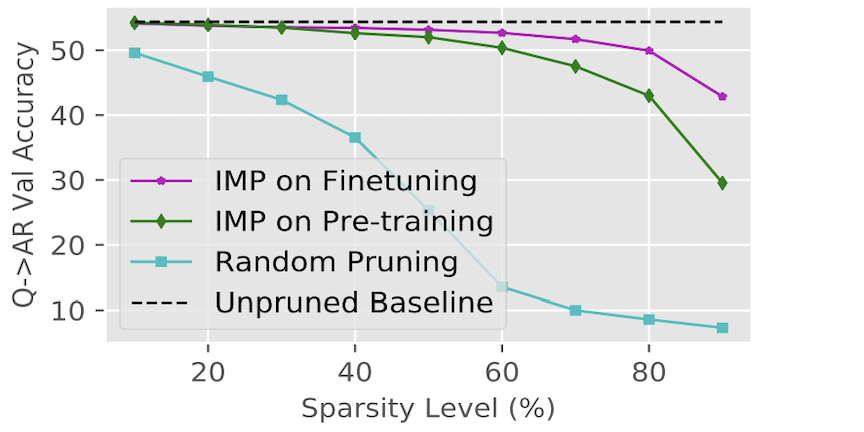 [AAAI’22] Playing Lottery Tickets with Vision and Language
Z. Gan, Y. Chen, L. Li, T. Chen, Y. Cheng, S. Wang and J. Liu. [Paper] [Code] [Abstract]
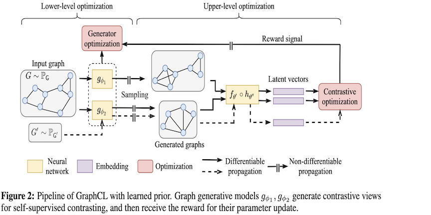 [WSDM’22] Bringing Your Own View: Graph Contrastive Learning without Prefabricated Data Augmentations Y. You, T. Chen, Z. Wang and Y. Shen. [Paper] [Code] [Abstract]
2021
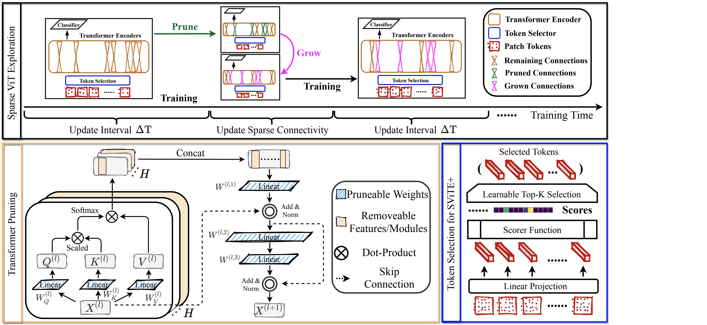[NeurIPS’21] Chasing Sparsity in Vision Transformers: An End-to-End Exploration
T. Chen, Y. Cheng, Z. Gan, L. Yuan, L. Zhang and Z. Wang. [Paper] [Code] [Abstract]
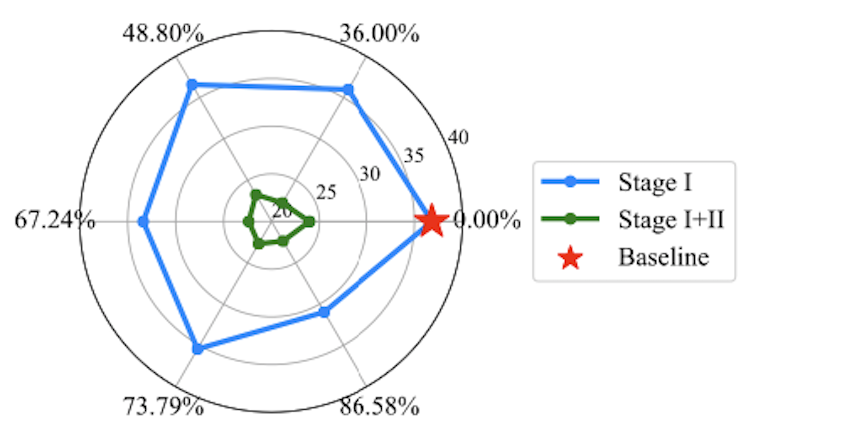[NeurIPS’21] Data-Efficient GAN Training Beyond (Just) Augmentations: A Lottery Ticket Perspective T. Chen, Y. Cheng, Z. Gan, J. Liu, and Z. Wang. [Paper] [Code] [Abstract]
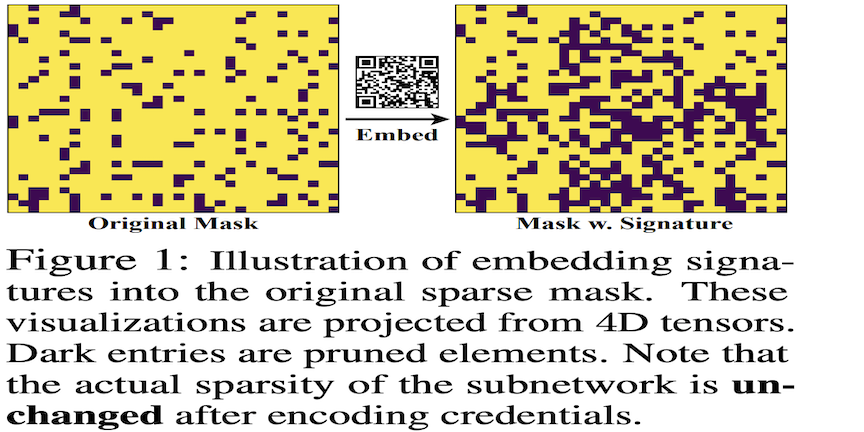 [NeurIPS’21] You are caught stealing my winning lottery ticket! Making a lottery ticket claim its ownership X. Chen*, T. Chen*, Z. Zhang and Z. Wang. [Paper] [Code] [Abstract]
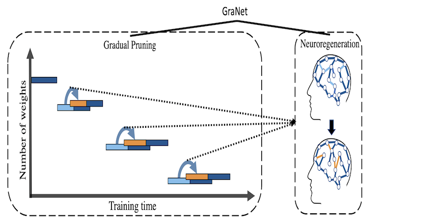[NeurIPS’21] Sparse Training via Boosting Pruning Plasticity with Neuroregeneration
S. Liu, T. Chen, X. Chen, Z. Atashgahi, L. Yin, H. Kou, L. Shen, M. Pechenizkiy, Z. Wang, and D. Mocanu. [Paper] [Code] [Abstract]
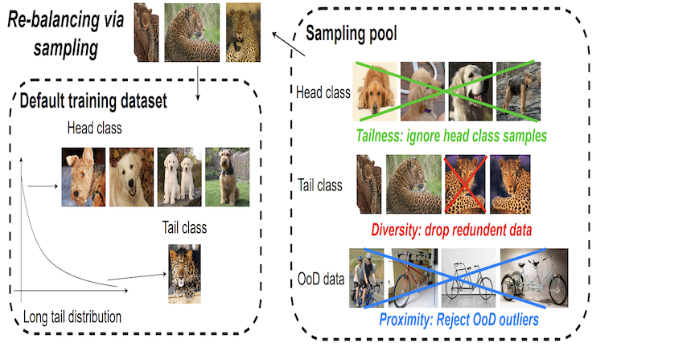[NeurIPS’21] Improving Contrastive Learning on Imbalanced Data via Open-World Sampling
Z. Jiang, T. Chen, T. Chen and Z. Wang. [Paper] [Code] [Abstract]
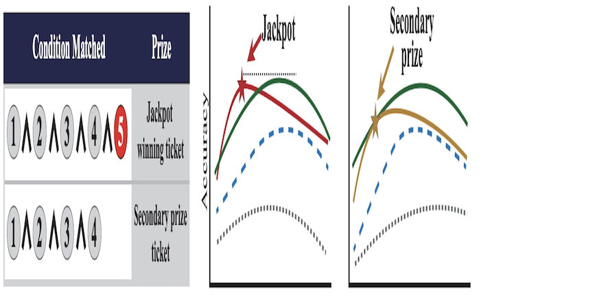[NeurIPS’21] Sanity Checks for Lottery Tickets: Does Your Winning Ticket Really Win the Jackpot? X. Ma, G. Yuan, X. Shen, T. Chen, X. Chen, X. Chen, N. Liu, M. Qin, S. Liu, Z. Wang and Y. Wang. [Paper] [Code] [Abstract]
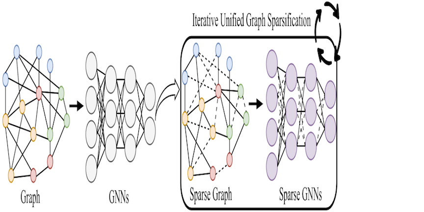 [ICML’21] A Unified Lottery Ticket Hypothesis for Graph Neural Networks
T. Chen*, Y. Sui*, X. Chen, A. Zhang, and Z. Wang. [Paper] [Code] [Abstract]
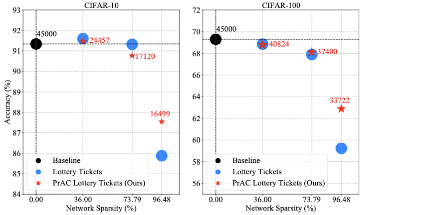 [ICML’21] Efficient Lottery Ticket Finding: Less Data is More
Z. Zhang*, X. Chen*, T. Chen*, and Z. Wang. [Paper] [Code] [Abstract]
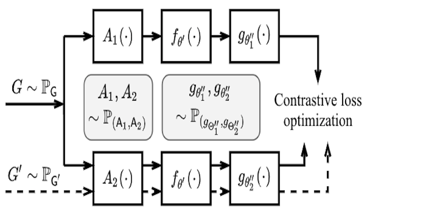 [ICML’21 Long Talk] Graph Contrastive Learning Automated
Y. You, T. Chen, Y. Shen, and Z. Wang. [Paper] [Code] [Abstract]
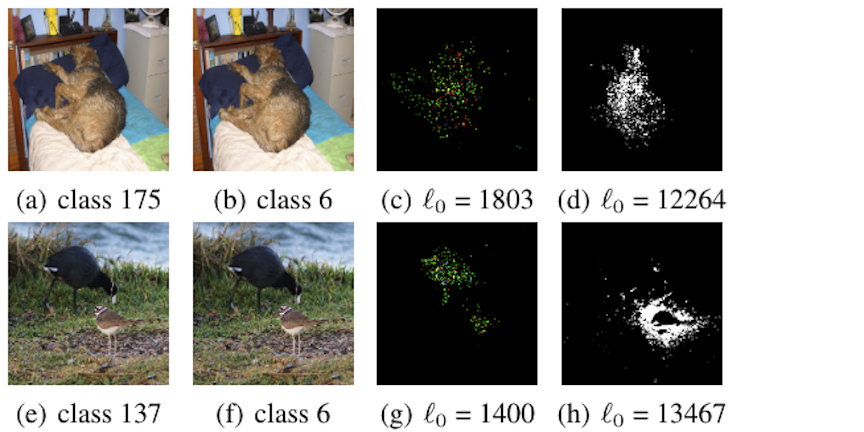 [ICML’21 Long Talk] Sparse and Imperceptible Adversarial Attack via a Homotopy Algorithm
M. Zhu, T. Chen, and Z. Wang. [Paper] [Code] [Abstract]
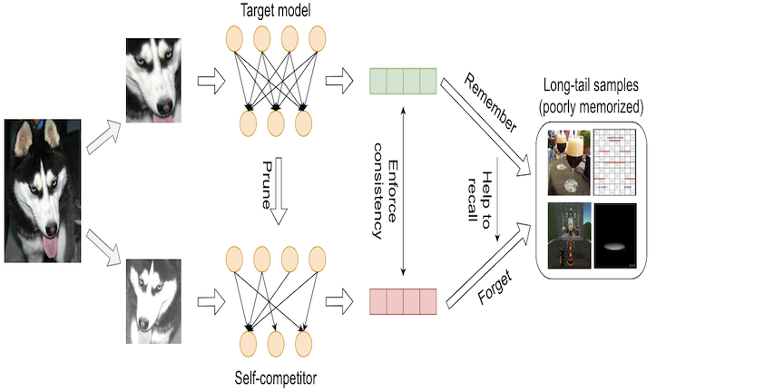 [ICML’21] Self-Damaging Contrastive Learning
Z. Jiang, T. Chen, B. Mortazavi, and Z. Wang. [Paper] [Code] [Abstract]
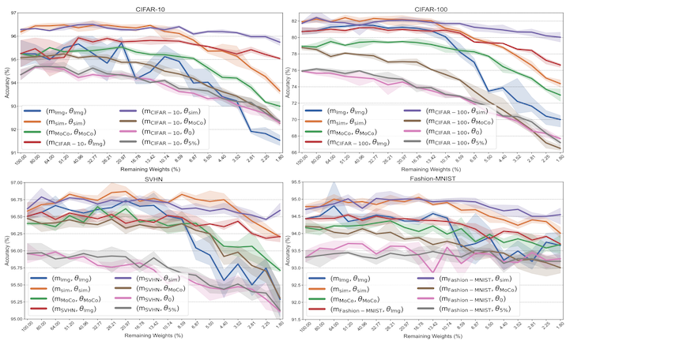 [CVPR’21] The Lottery Tickets Hypothesis for Supervised and Self-supervised Pre-training in Computer Vision
T. Chen, J. Frankle, S. Chang, S. Liu, Y. Zhang, Z. Wang, and M. Carbin. [Paper] [Code] [Abstract] [Project]
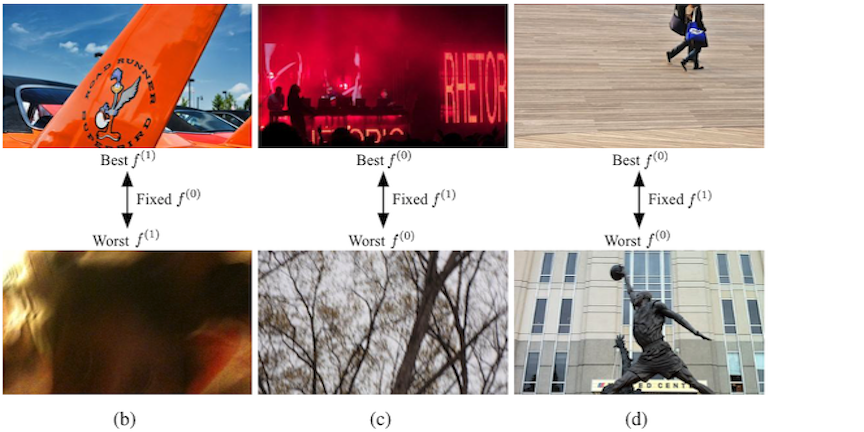 [CVPR’21] Troubleshooting Blind Image Quality Models in the Wild
Z. Wang, H. Wang, T. Chen, Z. Wang, and K. Ma. [Paper] [Code] [Abstract]
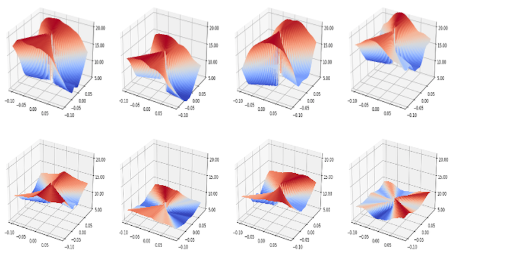 [ICLR’21] Robust Overfitting may be mitigated by properly learned smoothening
T. Chen*, Z. Zhang*, S. Liu, S. Chang, and Z. Wang. [Paper] [Code] [Abstract]
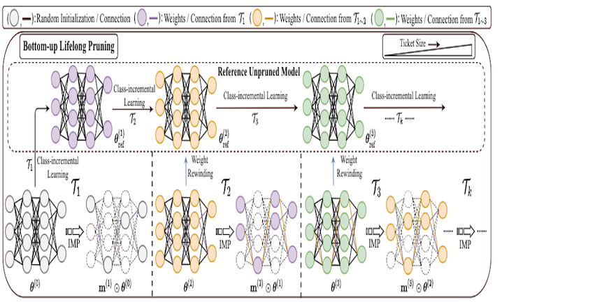 [ICLR’21] Long Live the Lottery: The Existence of Winning Tickets in Lifelong Learning
T. Chen*, Z. Zhang*, S. Liu, S. Chang, and Z. Wang. [Paper] [Code] [Abstract]
 [ICLR’21] GANs Can Play Lottery Tickets Too
[ICLR’21] GANs Can Play Lottery Tickets Too
X. Chen, Z. Zhang, Y. Sui, and T. Chen. [Paper] [Code] [Abstract]
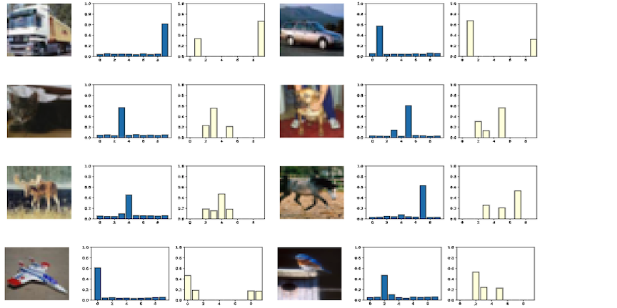 [ICLR’21 Spotlight Oral] Undistillable: Making A Nasty Teacher That CANNOT teach students
H. Ma, T. Chen, T. Hu, C. You, X. Xie, and Z. Wang. [Paper] [Code] [Abstract]
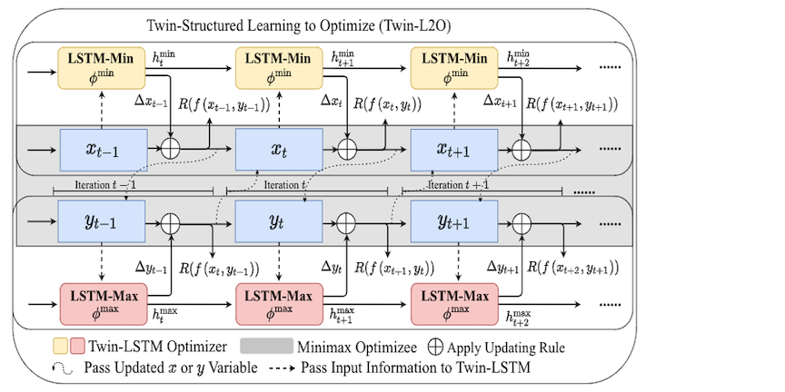 [ICLR’21] Learning A Minimax Optimizer: A Pilot Study
J. Shen, X. Chen, H. Heaton, T. Chen, J. Liu, W. Yin, and Z. Wang. [Paper] [Code] [Abstract]
[CVPRW’21 Spotlight Oral] BNN-BN=? Training Binary Neural Networks without Batch Normalization
T. Chen, Z. Zhang, X. Ouyang, Z. Liu, Z. Shen and Z. Wang. [Paper] [Code] [Abstract]
[ICASSP’21] VGAI: End-to-End Learning of Vision-Based Decentralized Controllers for Robust Swarms
T. Hu, F. Gama, T. Chen, Z. Wang, A. Ribeiro, and B. Sadler. [Paper] [Code] [Abstract]
[AAAIW’21 Oral] AR-Stock: Deep Augmented Relational Stock Prediction
T. Wei, Y. You, and T. Chen. [Paper] [Code] [Abstract]
2020
[NeurIPS’20 Spotlight Oral] Training Stronger Baselines for Learning to Optimize
T. Chen*, W. Zhang*, J. Zhou, S. Chang, S. Liu, L. Amini, and Z. Wang. [Paper] [Code] [Abstract]
[NeurIPS’20] The Lottery Ticket Hypothesis for Pre-trained BERT Networks
T. Chen, J. Frankle, S. Chang, S. Liu, Y. Zhang, Z. Wang, and M. Carbin. [Paper] [Code] [Abstract] [Project]
[NeurIPS’20] Once-for-All Adversarial Training: In-Situ Trade off between Robustness and Accuracy for Free
H. Wang*, T. Chen*, S. Gui, T. Hu, J. Liu, and Z. Wang. [Paper] [Code] [Abstract]
[NeurIPS’20] Graph Contrastive Learning with Augmentations
Y. You*, T. Chen*, Y. Sui, T. Chen, Z. Wang, and S. Yang. [Paper] [Code] [Abstract]
[NeurIPS’20] Robust Pre-Training by Adversarial Contrastive Learning
Z. Jiang, T. Chen, T. Chen, and Z. Wang. [Paper] [Code] [Abstract]
[InterSpeech’20] AutoSpeech: Neural Architecture Search for Speaker Recognition
S. Ding*, T. Chen*, X. Gong, W. Zha, and Z. Wang. [Paper] [Code] [Abstract]
[ECCV’20] HALO: Hardware-Aware Learning to Optimize
C. Li*, T. Chen*, H. You, Z. Wang, and Y. Lin. [Paper] [Code] [Abstract]
[ICML’20] When Does Self-Supervision Help Graph Convolutional Networks?
Y. You*, T. Chen*, Z. Wang, and Y. Shen. [Paper] [Code] [Abstract]
[ICML’20] Self-PU: Self Boosted and Calibrated Positive-Unlabeled Training
X. Chen, W. Chen, T. Chen, Y. Yuan, C. Gong, K. Chen, and Z. Wang. [Paper] [Code] [Abstract]
[CVPR’20] Adversarial Robustness: From Self-Supervised Pre-Training to Fine-Tuning
T. Chen, S. Liu, S. Chang, Y. Cheng, L. Amini, and Z. Wang. [Paper] [Code] [Abstract]
[CVPR’20] L^2-GCN: Layer-Wise and Learned Efficient Training of Graph Convolutional Networks
Y. You*, T. Chen*, Z. Wang, and Y. Shen. [Paper] [Code] [Abstract]
[ICLR’20] Triple Wins: Boosting Accuracy, Robustness and Efficiency by Enabling Input-Adaptive Inference
T. Hu*, T. Chen*, H. Wang, and Z. Wang. [Paper] [Code] [Abstract]
[ICLR’20] I am Going MAD: Maximum Discrepancy Competition for Comparing Classifiers Adaptively
H. Wang, T. Chen, Z. Wang, and K. Ma. [Paper] [Code] [Abstract]
2019
[NeurIPS’19] Learning to Optimize in Swarms
Y. Cao, T. Chen, Z. Wang, and S. Yang. [Paper] [Code] [Abstract]
 [ICCV’19] ABD-Net: Attentive but Diverse Person Re-Identification
[ICCV’19] ABD-Net: Attentive but Diverse Person Re-Identification
T. Chen, S. Ding, J. Xie, Y. Yuan, W. Chen, Y. Yang, Z. Ren, and Z. Wang. [Paper] [Code] [Abstract]
Selected Journal Paper
[JMLR’22] Learning to Optimize: A Primer and A Benchmark
(α-β) T. Chen, X. Chen, W. Chen, H. Heaton, J. Liu, Z. Wang, and W.Yin. [Paper] [Code] [Abstract]
[TPAMI’22] Bag of Tricks for Training Deeper Graph Neural Networks: A Comprehensive Benchmark Study
T.Chen*, K. Zhou*, K. Duan, W. Zheng, P. Wang, X. Hu, and Z. Wang. [Paper] [Code] [Abstract]
Experience
Google, Research Intern [May 2022 - Aug. 2022]
- Mentor: Dr. Xianzhi Du, Dr. Denny Zhou
IBM T. J. Watson Research Center, Part-time Research Intern [Oct. 2021 - Dec. 2021]
- Mentor: Dr. Horst Samulowitz, Dr. Lisa Amini
Facebook Research, Research Intern [May. 2021 - Aug. 2021]
- Mentor: Dr. Xing Wang, Dr. Jason Chen
Microsoft Research Redmond, Part-time Research Intern [Sep. 2020 - Dec. 2020]
- Mentor: Dr. Yu Cheng, Dr. Zhe Gan
Microsoft Research Redmond, Research Intern [May. 2020 - Aug. 2020]
- Mentor: Dr. Yu Cheng, Dr. Zhe Gan, Dr. Yu Hu
Walmart Technology, Research Intern [May. 2019 - Aug. 2019]
- Mentor: Dr. Yang Yang
University of Science and Technology of China, Research Assistant [Jun. 2017 - Jun. 2018]
- Mentor: Dr. Zhouwang Yang
Harvard University, Research Intern [Jul. 2016 - Jan. 2017]
- Mentor: Dr. Gil Alterovitz
Research Award
- 2022 Adobe Ph.D. Fellowship Award, Jul. 2022
- ICML 2022 Participation Grant, Jul. 2022
- 2021 Graduate Dean’s Prestigious Fellowship, Aug. 2021
- 2021 IBM Ph.D. Fellowship Award, Aug. 2021
- 3rd Place, ICCV 2019 WIDER Challenge Track 4, Oct. 2019
- First Place, Walmart-TAMU Person Re-Identification (Re-ID) Competition, May. 2018
- NeurIPS 2019 Student Travel Award, Dec. 2019
Media Coverage
- Shrinking massive neural networks used to model language, MIT News (Featured), Dec. 2020
- Fooling deep neural networks for object detection with adversarial 3-D logos, Tech Xplore, Jul. 2020
More About Me
- I am a big fan of Pokemon. Playing Pokemon Go is one of my daily activities.
- I also enjoy Hip-Hop and Country music. Air (艾热) is one of my favorite Chinese Hip-Hop stars.